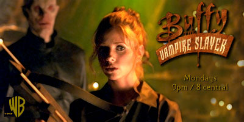
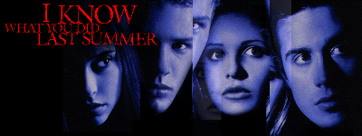

This page is your guide through the rough and tumble world of both mountain bike racing and vampire slaying. What do they have in common you ask? Nothing, except I am a mountainbiker with a rather morbid fascination with vampires!
I recently dislocated my shoulder while training and have been turned into a couch potato. This has given me a little to much time on my hands. These pages are the result. However, I will be going back to school this January/98 and these pages will inevitably self destruct. Or at least suffer a little neglect.

My name is Mark Webster. I am a 24 year old student currently residing in Halifax, Nova Scotia Canada. Want to know more about me? Then click the Canadian flag to get the skinny.
On your right is the one and only vampire slayer Buffy Summers. The pic on the left is Buffy in real life - Sarah Michelle Gellar. Click below to enter my page dedicated to the hit show Buffy The Vampire Slayer.
Mountainbiking and cycling in general have been a passion of mine for almost a decade now. I have been racing for the past 3 years. Click on the pic and explore my Mountainbike page!
I am learning to snowboard this winter! I was an avid skier for most of my life up to a few years ago. I just plain burnt out of it. I am hoping that snowboarding will reintroduce me to the mountains. Click the picture of my new board and go riding!
Buffy The Vampire Slayer Links
The Young's Home page (my friend Rennie Young's homepage)
Are you a fan of Bill Gates? Or do you despise him? Whatever the case go here!

Are you a Scream Fan? Click above and Scream again! Click below for more Wes Craven madness!!!
Comments, questions and general banter welcome!

Last updated Sunday, Dec. 28/1997